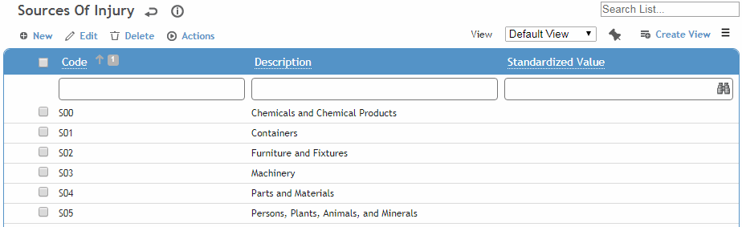

This table lists origins of a workplace incident (e.g. hoses, skids, sewage).
To filter the list of records, enter a few characters in one or more of the fields at the top followed by an asterisk, then press Enter.

Click a link to edit, or click New.
Enter a Code and Description.
To assign preventive actions to this source of injury, click New on the Preventive Actions tab and choose an action (from the PreventiveAction table). When this source of injury is selected, the related actions are added to the Actions tab.
Optionally, select the Standardized Value (from the SourceofInjuryStandardizedValue look-up table) to categorize each record. This value will be used by the predictive Analytics module to compare your data to that of other organizations and determine your relative performance.
Click Save.